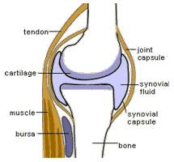
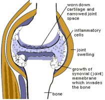

Arthritis, Diabetes, Digestion
Courtesy of Dr. Nick Delgado
Arthritis
Arthritis affects 25% of the United States population. That means 50,000,000 Americans suffer from this painful disease. It accounts for over a billion dollars lost every year through Social Security Disability payments issued to individuals unable to function because of this devastating disease. The Grow Young and Slim plan can stop the pain and prevent further breakdown of the joints. Arthritis has many different causes.
One of the most painful forms is gouty arthritis, which generally affects the toe joint first, although it can affect nearly any joint in the body. Gout was very common in the Middle Ages and was at its highest rate in recorded history at that time. Their diet included large amounts of meat - at least six times per day; a typical dish was blackbird pie, a dish in which birds were actually baked in the pie shell!
A sample of blood viewed through a microscope from an individual with gout will reveal sharp crystals. These uric acid crystals attack the joints and cause destruction. It is interesting that these crystals do not destroy the joints directly. Your white blood cells play a role in this destruction.
If your uric acid level is over 7, it is very likely you will develop a gouty arthritis attack. Uric acid is a waste product of nucleic acid found in animal products and high protein foods. A diet high in protein, cheese, other dairy products and animal flesh will cause an elevation of uric acid. If the uric acid level in the bloodstream becomes too high, sharp crystals will form.
Your white blood cells know uric acid crystals should not be in the bloodstream. The white blood cells will begin to engulf these sharp crystals and try to dissolve them. Unfortunately, these crystals are one of the few things in nature the white blood cells cannot overpower. White blood cells can eat and dissolve cancer cells, various bacteria and foreign bodies in your intestinal lining, but they cannot digest uric acid crystals.
Within the white blood cells are little sacks called lysosomes that are the most powerful digestive juices in the human body. When the sharp uric acid crystals puncture the lysosomes, these juices dissolve the outer part of the white blood cell and release into the joint area and begin to dissolve the joint.
Gouty arthritis is one of the easiest problems to cure; you simply reduce the excess proteins in the diet and begin consuming more complex carbohydrates. Within 12 weeks, elevated uric acid levels will lower to a safe range because the crystals begin to dissolve as protein is reduced.
Some blood pressure medications such as diuretics will create an artificial elevation of uric acid levels. When Zyloprim or Benamid are prescribed to lower these uric acid levels, other side effects result. It's better to correct the cause naturally by diet, increased water intake, herbs and hormones.
The products we recommend for arthritic type pain, headache pain or back pain contains the miracle ingredients glucosamine sulfate and chondroitin written about in the best selling book “The Arthritis Cure. As we age, the aches and pains increase. Up until now, most people get pain relief with Aspirin and Tylenol. With Aspirin you risk GI irritation, bleeding and allergy reactions. And Tylenol can cause Kidney failure and liver damage. Until recently the only presciption help offered to the arthritis sufferer was anti-inflammatory drugs, including cortisone. Although symptoms improve, the deterioration continues within the joints and additional side effects from the drugs may be experienced. Cortisone has other side effects after long-term use, including muscle wasting, ulcers, fluid and fat gains. Some pain is reduced temporarily because these drugs suppress white blood cell activity, thus reducing the number of white blood cells left to release their digestive juices. Remember, though, your white blood cells also protect you from disease and infection. With this suppression, you are now susceptible to other problems.
Glucosamine sulfate which is a polysaccharide the major amino sugar in the body. Amino sugars are important components of connective tissue, including cartilage. It actually stimulates new cartilage formation to protect the bone surface
Oral products with chondroitin work with Glucosamine and lead to long lasting pain reduction and functional improvement by increasing cartilage building activities, reducing enzymatic destruction of the cartilage by anti-inflammatory effects. It acts to prevent the death of cartilage.
Cetyl Myristoleate (CMO) lubricates joints (supports synovial fluid), douses inflammation, curtails the autoimmune response that attacks the body’s own joints and it helps support the immune system. CMO supplements the body’s natural supply of Doctors have given CMO to the majority of rheumatoid and osteoarthritis patients who do not respond to other therapies (most people don’t get result from typical arthritic drugs according to Dr John McDougall). Nearly four out of five patients show improvements.
Collagen is the most abundant protein in the body (over 26% of our protein dry weight) representing 50% of the protein found in collagen. A quality supplement with the correct delivery system also provides joint-supporting proteoglycans (protein molecules found in the cellular matrix of connective tissue) to aid the bodys anti-inflammatory response. Collagen is also important to prevent skin and tissue breakdown associated with aging.
Other effective pain relieving herbs are Valerian-lowers blood pressure, stress, anxiety, alcoholism and gas. Kava Kava-is used for nervousness, stress, insomnia, promotes sleep, relieves cramps due to muscle spasms, and reduces water retention. White Willow Bark is used in soothing sores, long been recommended as an efficient antidote for prescription and over the counter drug poisonings, diarrhea, gas, heartburn and other general gastrointestinal distress. Feverfew helps with stiffness, aching pain, and migraine headaches. This powerful combination of nutrients helps reduce muscle cramps and inflammation while nutritionally promoting joint health by enhancing the body’s ability to maintain and regenerate connective tissue.
Rheumatoid arthritis is a more serious form of arthritis. This also involves the white blood cells, but differently than described above. When there is a low oxygen level in the joint area, the white blood cells explode because of a lack of oxygen and release their strong digestive juices, which begin to dissolve the joints.
Medical studies have shown arthritics have a very low oxygen level in the joints. The reason for the low levels is a blockage of red blood cells in the blood vessels that occurs from consuming a high fat diet. A high fat diet is the principal cause of rheumatoid arthritis. The excess fat coats the red blood cells. These red blood cell "clumps" are now too large to squeeze through the capillaries, causing them to become blocked. Imagine how small red blood cells are - a head of a pin can hold five million! Normally, the red blood cells should bounce off each other; but, if there is a large amount of fat in the bloodstream, the red blood cells stick together and form clumps, which then create blockages.
When a blockage occurs, the blood fluid keeps pumping and is forced into the surrounding tissues and causes edema. You can literally leave a finger mark or indentation in the skin area affected by edema. Many people with arthritis have edema, but are not aware of it because before edema is visible, one must have a build-up of over 60% fluid.
Edema is also caused by physical trauma. When one is hit on top of the head, a bump forms. This bump is comprised of fluid that accumulates to keep the tissues in place to reduce further destruction. This fluid is so low in oxygen the white blood cells begins to destroy themselves.
One example is "housemaid's knee." A person constantly on their knees will damage the joints. Edema will form because of the accumulation of fluids from trauma and a high fat diet. This fluid accumulation leads to arthritis of the knee because the white blood cells begin to destroy themselves. The same trauma can occur to a construction worker who continually uses a jackhammer to break concrete. The constant vibration leads to arthritis of the fingers.
But, it doesn't always have to be a trauma that leads to edema. We know women have a 200% higher incidence of arthritis than men. As fluids accumulate during the menstrual cycle, the edema concentration, combined with a high fat diet, will cause arthralgia-aching joints. White cell invasion occurs in all types of arthritis and is painful and difficult to treat. The most common form is osteoarthritis. Osteoarthritis is the form of arthritis where cartilage is damaged due to low oxygen levels. When the white blood cells begin to eat the cartilage, the cartilage seems to alter itself for protection and begins to form itself into bone matter. This will result in bone rubbing directly against bone.
Medical researchers at UCLA extracted white blood cells from the lymph system of patients to treat arthritis. Millions of white blood cells were drained until the symptoms of arthritis were reduced. The patients experienced temporary relief, until the white blood cell count returned to normal and the pain in the joints returned. As you can appreciate, just removing or immobilizing the white blood cells does not address the cause of the problem. We could control this disease if people would recognize arthritis is a result of the high fat foods we eat. For those who believe it is due to heredity, let's examine the Pima Indians.
These Indians live in Arizona, and as a group, consume one of the highest fat diets in our country. Because of this high fat diet, the Pima Indians recorded the highest rate of arthritis in our country, and they also have an extremely high rate of gallstones. Gallstones are a concentration of cholesterol in the gallbladder, along with an imbalance of polyunsaturated fats. Reducing fat and cholesterol in the diet can dissolve gallstones.
We say arthritis is not genetic because the blood relatives of the Pimas, the Tarahumara Indians, consume a high fiber, water rich, low fat diet and have no incidence of arthritis or gallstones. If there were a genetic factor, these people would suffer the same problems.
There are many success stories about alleviating the symptoms of arthritis. One such story is about a ballet teacher, who was severely affected. Every morning she had to sit in a hot tub just to move. If she had no help to get to the tub, she would drag herself there. She started avoiding fats, she increased her complex carbohydrates to rid herself of the pain and stiffness. She was fortunate the arthritis had been caught and stopped before the joints had degenerated. There was some scar tissue and some knobby accumulation, but at least further damage was prevented. This woman returned to her teaching and conducted a ballet tour that was extremely important to her career. Later, she went back to school and became a nutritionist by the age of 53.
Another story is about the wife of a chiropractor, who was afflicted with a severe case of rheumatoid arthritis though she was only in her early thirties. Her pain and stiffness were eliminated following our recommendations regarding a Grow Young and Slim plan.
I met another woman before I became involved in nutritional research, however, who was not so fortunate. This woman had such a severe case of arthritis that just touching her body would cause tears to roll down her face. Her joints were so crippled her fingers and toes curled under. Her rheumatologist (doctor specializing in the treatment of arthritis) had prescribed several expensive drugs to no avail. Surgery was done on one knee joint and before success could be verified, surgery was performed on her other knee. Unfortunately, the left knee was frozen at a 45-degree angle. Her right knee also became totally immobilized after surgery. Her normal breakfast consisted of eggs with bacon and toast with butter. She ate one of the fattiest diets I've ever seen. It was never suggested to her she should change her diet, reduce the large amounts of butter, meat and cheese she was consuming.
The medical dictionary currently available states there is no known cause for arthritis. It is believed by some people arthritis may be caused by some virus. Yet, if the people who prepared the medical dictionaries would do some research and read current literature, they would find the answers are already available. There are enough case studies and worldwide studies proving dietary changes can make arthritis a disease of the past.
To reduce the known arthritis forms, it is important to reduce fats in the diet. Begin by consuming more water rich foods. Also, be sure to take in adequate salt in the diet while reducing salt from processed foods because salt without sufficient water can cause additional fluid accumulation, which aggravates the arthritis. Exercise will help to reduce fat and fluid accumulation and stress reduction; relaxation techniques also will reduce arthritis symptoms.
If this doesn't give full immediate relief within seven weeks, investigate allergies to foods. For example, avoid all dairy products, cheese, yogurt and nonfat milk included. In some people milk proteins are not completely digested. Large particles enter the bloodstream where allergic reactions can disrupt the white blood cells and the immune system. Even tiny amounts of milk added to cereal or coffee will cause massive destruction, pain and stiffness in some people.
One lady was cured of arthritis by avoiding all dairy products. However, after only one small serving of a milk product, the pain and stiffness struck her joints within 24 hours! It took her several days of dairy-free eating to recover.
Hormone replacement can heal aging joints. Restore female and male hormone balance using natural progesterone cream, DHEA, testosterone herbs Avena Sativa with exercise and a low-fat diet.
Have you heard the suggestion of taking oil to lubricate the joints? Be aware the fluid that lubricates joints is made up of carbohydrates - and oil contains no carbohydrates. The use of vegetable oil or cod liver oil will worsen arthritis!
The best approach to reducing gouty, rheumatoid & osteoarthritis is:
- Increase water intake. Eat water rich complex carbohydrates, whole grain rice, beans, fruits & vegetables. Increase hydration with added water between meals.
- Reduce fats, oils, cheese, fatty meat, etc. use only essential fatty acids from whole sprouted flaxseeds & Evening Primrose
- Reduce salt
- Aerobic exercise
- use Chitosan with meals to absorb fat
- Reduce protein (uric acid).
- Physical therapy, including hot or cold therapy.
- Lose weight if necessary.
- Avoid dairy products for at least 6 months to note any improvement, and give your system time to clear allergies.
- Identify allergy producing foods by the PRIME TEST/ or Alcat Test. People have Fasted and then-eliminated those foods, chemicals, molds.
- Use Herbs: Alfalfa, Black Cohosh, Burdock, Cayenne, Devil Claw, Echinacea, Ginkgo Biloba, Hawaiian Noni, Licorice, Pau d’ Arco, Yucca, White Willow, Hydrangea, Sarsaparilla, parsley, Evening Primrose oil, long chain fatty acid cetyl ester, Calcium, magnesium, ionic minerals (92 organic mineral salts & trace).
| Normal Joint |
Inflamed Joint |
|  |
 |
Diabetes
There are ten million diabetics in the United States. They are at greater risk of heart attack, stroke, kidney damage, blindness and gangrene, with three times as high a death rate as do non-diabetics. A person is considered diabetic if the blood glucose level after fasting 8 to 12 hours exceeds 130 mg. on two separate occasions. Even after a very large meal, the blood sugar should not exceed 150 mg.
Symptoms of diabetes may include: fatigue, lack of energy, urination at night, and constant thirst (needing water every 15 to 30 minutes to dissolve the overflow of unused sugar in the blood and urine). Also, blurred vision (due to sugar accumulation in the lens of the eye) and weight loss (because of rapid burning of body fat due to your body's inability to use glucose).
Diabetes is mistakenly thought to be "well controlled" by insulin shots or pills. Diabetic drugs can control the blood sugar level, but the drugs have not helped to stop the rapid development of atherosclerosis associated with the diabetic condition. Diabetes is increasing in our country at the rate of 1.5 million new cases developing every year (a 15% yearly increase).
I vividly remember working in the physical therapy department of a hospital where I met a man named Charles. He was intelligent, kind and had a great sense of humor. Unfortunately, he could no longer continue his job as a university administrator, because he had become totally disabled by diabetes. He told me he had been at a party and had one drink, and nearly passed out. Everyone thought he was drunk, but later doctors confirmed he had developed diabetes. A year later, he suffered a stroke, and lost the ability to speak clearly (due to brain damage), lost control of his right arm, leg and bowels (he had to wear diapers). Charles became bedridden, and because of the constant pressure on the skin from lying in bed all day, he developed bedsores on his right leg and hip. The nurses tried to keep turning at regular intervals, because anyone who is weak and unable to roll over is in constant danger of bedsores.
Diabetes doesn't allow for proper healing of even minor sores, and before long the doctors had to amputate his left leg - his strong leg - opposite his stroke weakened leg. We were asked to give Charles whirlpool and ultraviolet light treatments for the bedsores on his hip and remaining ulcerated ankle, where you could now see bone and tendons. The doctors struggled to save his remaining leg, but it was no use.
I noticed every morning when I came to help Charles exercise that he was served 2 eggs, white toast with butter and bacon or sausage on the side. His lunches and dinners included large amounts of cheese, meat and dairy products. He was given only small amounts of vegetables and fruits, and even small amounts of whole grains or beans. I tried to tell my patients how important it was to reduce fat in the diet. However, patients in hospitals and convalescent homes are fed a diet based on outdated recommendations. I was unable to have the dietary departments change because I was told state laws had guidelines requiring the "four food groups." This could only be changed with doctors' orders and very few doctors in 1978 were prescribing a low-fat, high fiber diet for patients as treatment.
Supplements to reduce diabetes restore testosterone levels with herbs such as Avena Sativa, nettles, Saw Palmetto, Epimedium Sagittatum, and zinc. Have your doctor prescribe Testosterone gel to apply to your skin. Take Chitosan and Pyruvate with your meals to remove and burn fat allowing the insulin to become efficient. Add Aged Garlic Extract (Latin for garlic is Allium sativa), chromium picolinate, and niacin. Chromium is an essential mineral to balance insulin’s regulation of carbohydrates, fats, and proteins. Chromium picolinate works with insulin to initiate thermogenesis, to reduce body fat and build lean muscle mass. Ionic minerals, the B vitamin Niacin, CoQ10, Devil’s Claw, DHEA, Hawaiian Noni, Licorice, Psyllium fiber, Ginko Biloba, Pau d’ Arco, and Una de Gato improve glucose (sugar) control.
Now, several years later, we have shown the effectiveness of our program, and more doctors are recommending our approach to their patients. The fact remains, though, millions of people, and especially the ones you love and care about are still unaware of how to achieve this ideal health. Help us bring the Grow Young & Slim Plan to your community hospital. Contact the doctors and administrators and we can help them to meet the 1999 federal guidelines for “Wellness Plans”.
Two scientists, Burson and Yao, won the Nobel Prize after proving a person with diabetes produces as much insulin as a normal person (in 90% of the cases). From this information, we know diabetes is usually not caused by a lack of insulin. We have discovered the principal cause of diabetes is excess fat in the blood, which can desensitize the insulin, and the insulin is then unable to push glucose into the cells for energy. The fat accumulates in the blood from over consuming fatty foods such as cheese, butter, margarine, oil, red meat and eggs, and from a lack of regular exercise.
You may develop a “temporary case” of diabetes if you have:
- FASTING OVER 48 HOURS - You use your glucose in 12 hours, and then your body is forced to release fat in the blood for reserve energy, just as if you had eaten fat.
- FEVER - Your body temporarily releases fat in the blood for up to 90 days when you have a fever.
- STRENUOUS EXERCISE (beyond your capabilities) - This can use your body's storage of glucose, which would trigger the release of fat for replacement energy.
- Dehydration can be caused from any of the above, or just insufficient water intake. Your blood sugar can be better maintained with increased water intake to the point where your urine turns clear.
While this fat in the bloodstream can temporarily desensitize the insulin, you don't have to worry about occasionally testing diabetic in these short-lived, mild cases. Serious damage may only occur from years of poor diet or in people who can't produce insulin.
A severe form of the disease called "insulin-dependent diabetes" is caused by the inability of the pancreas to produce insulin in less than 10% of the people with diabetes. The pancreas can be damaged for the following reasons:
- Excessive long-term use of alcohol - Cirrhotic liver damage from alcohol also can lead to the inability to handle fat, resulting in diabetes.
- A virus infection, such as the mumps or the flu in some children.
- Overproduction of hormones by adrenal, thyroid or pituitary glands.
- An inherited malfunction of the pancreas.
- Severe allergic reaction to dairy products, or from consuming other foods you may be allergic to. This can damage the pancreas.
In all of these cases, a low-fat diet, increased water intake with exercise and testosterone replacement (if levels are low) can help you to avoid atherosclerosis, blindness and kidney damage that is usually associated with diabetes. You may reduce your need for insulin to body requirements (about 30 units per day), even if you need to take insulin for the rest of your life your will suffer less damage.
You probably will always need insulin if you were started on it before you were thirty years old. If you are very lean and take over 30 units of insulin per day, or if you are very lean and exercise a great deal (for example, run 15 miles/24 km per week or walk briskly 3 miles/5 km per day) and take over 20 units per day. On the other hand, if you are overweight and not very active, with your doctor's help through exercise and weight loss, you can gradually reduce your insulin dose. You may be able to stop your insulin injections with a suitable diet, such as the Grow Young & Slim Plan. UNDER NO CIRCUMSTANCES SHOULD YOU EVER ATTEMPT TO COME OFF INSULIN EXCEPT UNDER YOUR DOCTORS SUPERVISION.
In a 1935 study of 100 patients, Dr. Rabinowitz, placed half the patients on a low-fat diet (under 20%, as we recommend), and the other half on a high fat diet (56% fat). After the study, it was discovered those on a low-fat diet totally eliminated the need for injected insulin in 24% of the cases and reduced the need for insulin by over 58%. The group on the high fat diet was unable to reduce its insulin at all (less than 1%). The cholesterol levels were also dramatically reduced on the low-fat diet. Dr. Rabinowitz hypothesized it was the low cholesterol, low-fat diet that was the principal reason these diabetics did not develop heart disease, serious gangrene and other side effects, and he was right. He understood this idea back in 1935! Dr. Rabinowitz tried to convince the American public to change their diet, but no one would believe him. Everyone thought diabetes could not be controlled by diet and one would have to take insulin the rest of your life.
Dr. James Anderson conducted another study investigating the cause of diabetes in 1979 at the University of Kentucky Medical Center. Dr. Anderson asked his patients to eat one pound of sugar every day for eleven weeks. Can you imagine eating a pound of sugar every day! That would be like eating one of those five-pound containers of sugar in less than a week's time! The rest of the diet was composed of only 5% fat. After the full eleven-week testing period, and after checking their blood sugar level weekly, not one person tested diabetic on the glucose tolerance test. The patients' sugar level always measured in the low range; it would have to be over 175 by glucose tolerance to test diabetic. The results were shocking because it was thought sugar caused diabetes.
Afterward, Dr. Anderson tried a diet high in fats (65% fat) with almost no fiber present. In less than two weeks time, every person tested diabetic. He then tried a diet of 45% fat without complex carbohydrates or fiber present and everyone tested diabetic again. He had discovered fat in the diet caused diabetes and not sugars. He then tested a diet with 40% complex carbohydrates and 43% fat. The blood sugar level was higher than the group eating the pound of sugar per day, yet it did not get into the diabetic range because the water rich vegetables and fruit with fiber have a protective factor on the insulin itself.
We strongly recommend you visit your doctor to have your blood sugar level checked. If after a fasting test, it's over 100, you're already testing diabetic. If it is 130 or higher, more than likely you're already diabetic. If after eating or having a glucose tolerance test, it goes over 180 and does not return below 100 mg., you are diabetic.
In a second study reported in The Medical Times, May 1980, Dr. Anderson altered the diet of 20 lean diabetics. He selected lean individuals because some doctors would tell their patients to lose weight and the diabetes would be gone. Dr. Anderson discovered weight loss alone wouldn't cure diabetes, although losing weight does help. The diabetics ate a 70% complex carbohydrate, high fiber diet for two weeks. Dr. Anderson lowered the fat in the diet and had them eat Shredded Wheat, Grapenuts, crackers, whole wheat, rye bread, beans and raw fruit. The exciting results showed a reduction of insulin by 58% and cholesterol reduction by 30%. Diabetes Outlook also recommended the high complex carbohydrate, low-fat diet to avoid diabetes. The medical journals are coming out with more research showing a whole diet approach is better and safer to use than taking drugs or resorting to insulin.
Past treatments for diabetes have been varied and ineffective; in France they would give people a quarter pound of candy and small amounts of meat. Of course, it didn't help. In England, people were told to eat a high fat diet with no carbohydrates at all. Diabetics were told to eat fat, pork, blood and intestines, as rancid as they could bear. Unfortunately, this increased the death rate of the diabetics. Since they avoided carbohydrates, the doctors thought they were helping the problem!
There has been so much confusion in our country, too, about avoiding carbohydrates as treatment for diabetes. Yet, the Egyptians, 3,500 years ago, knew a low-fat, fiber rich and water rich complex carbohydrate diet was the best treatment for diabetics. It's written in their hieroglyphics: breads, berries and fruit. The Romans also knew this high fiber; low-fat diet would control diabetes. Dr. Kelly West, world-renowned endocrinologist, has reported over 62% of the adult-onset diabetics could be off insulin and back to normal on this low-fat, high complex carbohydrate diet. Dr. Kempner also reported similar results at Duke University.
The benefits of the water rich complex carbohydrates include increased endurance, greater energy, lowering of blood fats, reduced cholesterol and triglycerides, increased fiber or bulk to the stools and control of the blood sugar level. We know exercise also reduces the blood glucose level by reducing fat in the blood and improves the sensitivity of insulin, whereas bed rest and inactivity causes high blood sugar levels. We also know hypo-glycemia, which formerly was treated by a high protein diet, is best controlled by the water rich, complex carbohydrates. The Grow Young and Slim Plan can give you enough blood sugar to control and maintain a high, even source of energy. Eat more potatoes, fresh fruits and vegetables and you'll be rid of hypoglycemia.
In summary, to avoid diabetes we recommend you eat more water rich food (sprouted grains, potatoes, beans, vegetables and fruit) and reduce the foods that cause diabetes - fats, oils, cheeses and meats. You also should increase aerobic exercise (30 minutes daily is sufficient), visit the doctor regularly if you are on insulin to change the dosages as needed and reduce sugar intake to avoid hypoglycemia (although sugar is not the cause of diabetes, it may lead to hypoglycemia). The major agencies - the Diabetic Association and the Cancer Institute now agree with the Grow Young and Slim Again Plan to reduce fat to under 20%, increase raw food, vegetables, fruit and legumes to over 70% and reduce cholesterol intake. Take the herbs and supplements to improve your insulin and blood sugar levels.
Digestion
Over 100 trillion live bacteria feed on the food passing through the digestive tract. The average life span of Lactobacillus bacteria in the gastro-intestinal tract is three to ten days and they must be sufficient in number to balance the unfriendly bacteria. Supplements know as probiotics contain friendly bacteria, yeast, enzymes, greens, and essential fatty acids contribute to reducing the incidence of Dysentery, eliminate pathogens and toxins, improve pH balance, stimulate white blood cell activity, and supresses production of harmful yeast forms like Candida.
Supplements for good digestion we suggest you add to your blended vegetable fruit drink or consume with water include milk-free Lactobacillus the complete family must include Acidophilus, Delbruekii, Bulgaricus, Causasicus, Fermenti, Plantarum, Brevis, Heleveticus, Leichmannii, Lactis, and Bifidus. Also, microalgae such as Hawaiian Spirulina Pacifica contains over 100 vegetable- based nutrients with over 58 times more absorbable iron than spinach or 28 times more iron than raw beef liver. Spirulina provides 25 times more Beta-Carotene than raw carrots. It contains one of the richest sources of gamma linolenic acid (GLA)-essential fatty acids. Spirulina is rich in antioxidants, super Oxide Dismutase (S.O.D.), vitamins, B complex, minerals, chlorophyll and enzymes. The Friendly Yeast forms Saccharomyces Cerevisiae and Saccharomyces Boulardii contain vitamin B1 to prevent intestinal microbes.
Alfalfa Grass, Barley Grass, and Wheat Grass are rich in enzymes, protein, vitamins, trace minerals, chlorophyll the blood purifier, cancer fighting agents, cholesterol reduction, and pH balancer rich in alkalinity.
Other herbs that enhance digestion include Aloe Vera, Cascara Sagrada, Cayenne (Capsicum), Digestive Enzymes, Thyme, Golden Seal, Hawaiian Noni, Hawthorn Berry, Myrrh, Garlic, Pau d’ Arco, Una de Gato, Papaya tea, Psyllium Fiber and Wild Yam.
It is not enough just to take supplements to improve digestion and avoid disease, you must also exercise and change your diet to be rich in vegetables, fruit, legumes, and whole sprouts. I would like to take you back in time about four million years to understand how to achieve ideal health. Dr. Bryant Van of Texas A&M University studied prehistoric mans diet. The only way to do this was to analyze fecal material. He found primitive man ate primarily vegetables, fruits, nuts and seeds and smaller amounts of whole grains. Meat was rarely eaten, and only when they could catch some prey. We find the same basic diet over hundreds of thousands of years. Ten thousand years ago, man was still subsisting on fruits, vegetables, whole live grains and seeds called pulse.
It wasn't until approximately two hundred years ago that large quantities of meat and dairy products entered our diet. There has been a significant reduction in the use of legumes, seeds, whole grains, fruits and vegetables and a continual increase in cholesterol and fat intake. Within the last thirty years, unfortunately, there has also been an alarming increase in our diet of sugar, salt, food additives and artificial foods. Is it any wonder why this generation has such poor health, obesity, cancer, and digestive problems. What will be the health of our future generations? We need to understand the digestive system to grasp these problems.
The digestive process begins when you chew food and the salivary glands secrete saliva to help break down the food. It then goes down the gullet to the stomach where it encounters certain digestive enzymes. Next, it passes through the small intestine and is broken down further by digestive juices secreted by the pancreas, gallbladder and liver. The food goes down a long pathway in the small intestine, nearly 32 feet, where there is a tremendous absorption area. The little villi located here absorb much of the food, with the remainder moving to the large intestine and eventually passing out of the body.
When we talk about the food we eat, an analysis of packaged food labels of 10 years ago would show the term "crude fiber" was often used. This was an inaccurate measurement of the actual fiber content in food because they would boil the food in the presence of a weak acid or alkali. All that remained was cellulose and lignin and it was believed this was the amount of fiber in food. This was a critical mistake, though, because "dietary fiber," the term we now use, is truly the total amount of plant food remaining intact and undigested after passing through the small intestine. What we find remaining is not only cellulose and lignin, but also pentose, pectin, guar gums, bengal gram, etc. There are several different components to fiber itself.
Fiber acts like a sponge, retaining water as it passes through the small intestine. This is usually called roughage, which is a misnomer because it gives the impression the food you eat roughs up the intestinal tract. Instead, we should call it "softage," because as this undigested food passes through the lower digestive system, it acts like a sponge to absorb water and other fluids, creating large, soft stools that pass out of the body in a healthy manner.
If we ingest a radioactive isotope (enclosed in a tiny case), we can monitor its intestinal transient time (the amount of time it takes to pass through and out of the body). Generally, in a healthy individual it should pass out within 1 1/2 days. The shocking truth is for the average American, the transient time is over three days, and as long as two weeks in many elderly people! We then have the resultant health problems.
One problem that develops is the result of a large amount of intestinal pressure inside the abdomen, created as fiberless food passes through the digestive tract and pulls out all the fluid. As a result, you're left with little, hard, rock-like stools, which some people call "bullets" or "buttons". This problem is widespread because of the preponderance of animal products (meat, cheese, eggs, dairy products, etc.) in our diet. These foods are all totally digestible, and devoid of fiber. You need about two hundred grams (7 ounces) of intestinal content to reach the rectum and pass out of the body. If there is less than this amount, (the average American has only about 3 ounces) the body has to use all its pressure and muscles in the abdominal area to force these stools out of the body.
As a result, one of the problems, which will develop early on, is hiatus hernia, a condition in which the upper part of the stomach is pushed up through the diaphragm toward the thoracic area. This is the most common cause of heartburn because the gastric juices pool in this area and burn. We now know the hiatus hernia is clearly related to constipation. We also know hiatus hernia is not present in cultures, eating high fiber food.
Gallstones can also develop from lack of fiber in the diet. The gallbladder, which contains bile salts and cholesterol, sprays these bile salts and substances over the food to help digestion. If there is a lack of dietary fiber, large concentrations of cholesterol develop in the gallbladder. Of course, we also develop high concentrations of cholesterol from eating high cholesterol foods and gallstones, usually, are made of cholesterol in crystallized form.
These stones can be dangerous because severe pain can result if they block off the little passageway from the gallbladder to the intestines. It's probably one of the most severe pains a person could ever experience, and is sometimes mistaken for appendicitis. The removal of the gallbladder is the most common operation in the U.S., approaching 500,000 yearly. The gallbladder is simply a collecting sack for bile from the liver. Removing the gallbladder does not solve the problem because stones can still form and lodge in the passageway between the liver to the intestines. This could lead to jaundice and some very serious side effects.
We have found if you increase fiber in the diet, while also decreasing cholesterol and fat intake, the following will happen:
- The fiber, especially water-soluble fiber, removes cholesterol from the body and the intestines. This helps to keep the balance of cholesterol to bile salts equal.
- Fiber pulls more bile salts and cholesterol out of the body, which means instead of returning to the liver, the liver cholesterol has to be converted into additional bile salts.
- A large intake of vegetable fiber or water-insoluble fibers increases the production rate of a solvent called chenodeoxycholate, which helps to keep these gallstones dissolved.
Most people do not realize that gallstones can be dissolved instead of resorting to surgery. We have found diet can dissolve these gallstones, especially if they're caught in the early stages. We know of several patient case reports where gallstones have successfully dissolved. If you have stones, have your doctor monitor your progress with the appropriate ultrasound or X-ray tests. Give yourself time and follow the Grow Young and Slim Plan very closely.
Another common digestive disorder is appendicitis. The appendix located near the end of the large intestine, looks like a little finger. We find the appendix often becomes infected in young people. It's the most common emergency surgery done in this country. It occurs more commonly in young people because the appendix is much narrower at a younger age. As you get older, it enlarges somewhat. If a young person suffers from a viral infection, the lymph also swells up because there is more lymph tissue in the appendix. If you are eating a low-fiber diet, without natural whole foods, the fecal material becomes so hard it can be trapped in the appendix and possibly lead to a serious infection, which is the cause of most appendicitis cases.
When I was in my early 20's, I was rushed to the hospital with incredible pain. All I could think was "Whatever you have to do to get rid of this pain, do it!" They removed my appendix, which was severely infected, and later told me they had saved my life on the operating table. I wish I had known ahead of time that I could have prevented this painful experience through a whole, natural diet. I don't think any of you would want to go through this surgery, either. We suggest, therefore, young people start the program right away. Following a high fiber, “softage” diet, can prevent appendicitis. Food will not be trapped in the appendix, and because there is no hard fecal material, there is no cause for infection. In Third World countries, appendicitis rarely, if ever occurs because of their diet.
Another digestive disorder, also resulting from a lack of fiber, is diverticulosis. This disease affects one out of every three adults past the age of sixty, and one out of ten younger people. It occurs when the intestinal tract begins to form bursts or bubbles along the way. Constipation leads to high pressure inside the intestine that form bubbles along the walls called diverticuli. Although this doesn't always lead to serious side effects, sometimes it can become infected and then you have a problem called diverticulitis. But, this also can be avoided by increasing natural fibers in the diet.
Research studies now show when you increase the fiber, it reduces the pressure in the intestines, and often there is no need for surgery. This is an exciting development - to know we can avoid the serious consequences related to diverticulosis. Unfortunately, some doctors still recommend a low-fiber, bland diet for diverticulosis and this is a very dangerous mistake.
Over 50% of the American population suffer from hemorrhoids, or piles. We always hear jokes about hemorrhoids and commercials for hemorrhoid relief, but it's serious if you have them. The process leading to this condition begins at the soft, anal cushion near the end of the rectum that is there to retain the fecal material at appropriate times. But, if you build up pressure in the intestines from lack of fiber, the constant pressure leads to a swelling of the blood vessels in this anal cushion. When hard, fecal material (which should be soft) passes by, the shearing pressure pushes these enlarged blood vessels and anal cushion out to the external part of the body. This can lead to itching, infection and very serious cases requiring surgery. Fortunately, here again, we have found the increase in fiber in the diet can relieve this extra pressure, and sometimes avoid the need for surgery. "Preparation H" and other similar products do not get to the cause of the problem, as does dietary fiber.
Ulcerative colitis and spastic colon are also caused by a lack of fiber and worsened by allergies to dairy products or other foods. Try a high fiber diet centered on the least allergy producing foods like whole grain brown rice, yams, squash and cooked noncitrus fruits. Then, each week add back in other grains, vegetables and fruits to identify foods that cause you digestive upset.
Varicose veins are another problem caused by a low-fiber diet. Over 50% of men and women past the age of fifty have these unsightly veins throughout their legs. Usually they occur in the blood vessels in the leg are located very near the skin, and are not surrounded by muscle to help maintain support. When pressure is built up in the intestines from constipation and straining to evacuate hard fecal material, the blood in the veins gets pushed back. This pressure damages the valves that are designed to allow blood to flow up toward the heart again; if these one-way valves get pushed backward, all the blood pools in the veins, causing them to distend and become swollen and very unsightly.
The high fiber, natural foods help to prevent the formation of varicose veins. But, once they do form, it is questionable whether they can be reduced because of the severe valve damage in the vein. In that case surgery is usually done or they tie off the flow of that vein. Varicose veins are preventable, and if they have already developed, the Grow Young and Slim Plan can prevent further occurrence and development of these unsightly veins.
It should be noted varicose veins are not present in other cultures consuming a vegetable rich diet. Many people believe varicose veins are caused by pregnancy, however in cultures where the women give birth to as many as nine children, such as the Bantus of Africa, varicose veins don't occur. The Bantus eat a high fiber, natural diet that prevents this pressure build-up. Some people have suggested standing on your feet all day cause varicose veins. Barbers, who stand all day, were compared to other groups who don't stand regularly, and no greater incidence of varicose veins was found. Of course, standing may irritate the situation somewhat, but a high fiber diet makes a difference in our digestive tract.
If you are having problems passing a large, soft stool at least once or more each day, or if they are hard, rock-like stools; begin adding at least one heaping tablespoon of wheat bran to your daily diet. Sprinkle it in your whole grain cereal or soup, and within one week you should see improvement. If there is no improvement, then add another tablespoon after the first week; by the end of the third week you may have to add another. Keep adding fiber in this fashion until you find how much is needed to maintain regularity.
Many people believe they eat a high fiber diet because they eat salads. Salads are very high in water content and low in fiber. The second best sources would be the legumes group, including beans, peas, nuts and seeds. Root vegetables such as carrots, potatoes and parsnips are also a sources of fiber. Vegetables can supply a significant amount of fiber if you’re consuming large 48 oz. servings of blended drinks with fruit with big servings of salads and raw food every day. For added fiber buy the coarse type of Miller's wheat bran, which does the job much better than the fine type of bran. Man was meant to eat a high fiber, natural diet for good health. Avoid foods without fiber and low in water content like meat and dairy products.